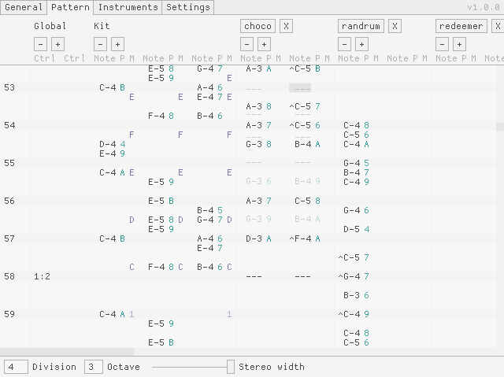

Osctet is a
music tracker
with special support for unusual tunings and rhythms. Its sound
engine's design is influenced by older synth/sampler hardware like
the Sound Blaster and MT-32, as well as by chipmusic-adjacent
software such as pxtone.
Download latest version (v1.2.0)
These builds should work on Windows 10+, macOS 13+, and Ubuntu 22+ or equivalent.
For older OS versions, you may need to build from source.
For release notes and older versions, see the
releases page.
Config files are compatible between versions.
Features
-
Alternative tunings
- Generate octave and non-octave equal temperaments
-
Familiar key bindings and
notation
adapt to each tuning
-
Scala scale file
support
-
Rhythmic features
- Flexible beat subdivisions
- Rational tempo changes
- Arbitrary tuplets
-
Synthesis engine
- Use subtractive, additive, or FM synthesis
- Mix and modulate oscillators with PCM samples
- Link parameters via modulation
- Bus effects: reverb, delay, compression
-
Sample loading & playback
- Supported formats include WAV, MP3, FLAC, and more
- Load pitch & loop start metadata from WAV files
- MIDI input (but no recording yet)
- Single-track and multi-track WAV export
- Customizable, shareable color themes
- Supported audio hosts: WASAPI, ALSA, JACK, CoreAudio
Known issues
- macOS version must be run from terminal (no app bundle)
To report an issue, use the
issue tracker.
Links
Screenshot

Licenses & credits
- Osctet by jangler (AGPLv3 license)
- Original Dina fonts by Jørgen Ibsen (MIT license)
-
Additional demo songs & pre-release testing by damifortune/HVB,
agargara, and alexa sophia